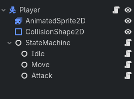

Node-based vs. Callable-based State Machines
What is a state machine?
A state machine, or finite state machine, is a programming pattern that breaks down the complex behavior of an object into smaller, more manageable actions and their respective events/responses. Think of it as controller for the object that switches between different sets of behavior based on various inputs to the object. MathWorks provides a very good explanation of state machines that I recommend taking a read through.
Let's take a simple 2D game for example where a player encounters an enemy monster that wants to attack them. It may be overwhelming at first glance, but let's break the player and enemy behavior into smaller actions. By default, every object should be able to stand in place, or stand idle. They should each be able to move about and also attack. Therefore, we have the following states:
- Idle
- Move
- Attack
We will develop these states using two different state machine approaches and explore their pros and cons. As a side note, I will be using Godot 4.7 for this tutorial. You can find the full code for this tutorial on my GitHub page. The assets for this tutorial are provided by Zerie on Itch.io where you can find many free and paid assets for your own projects.
Node-based State Machine
A common method, especially in Godot, is to use a Node-based State Machine. You can find a ton of tutorials on this subject, but the gist is to set up a base node to act as your overarching controller for states and then add child nodes to that controller for each individual state. You can see a example representation of this scene structure below.
- CollisionShape2D (CollisionShape2D)
-
- IdleState (Node)
- WalkState (Node)
- AttackState (Node)
I will not go overly in depth on node-based state machines, but I will provide some code definitions as well some reasons why I have moved away from this method. To start, let's define the main state class.
State
To start, let's define the main state class. The state class is an abstract class, meaning it is not intended to be used in its initial condition, but rather extended upon to create the various behaviors we want to use for our characters.
Loading state script...State Machine
State machine
Loading state machine script...Idle Node State
Now let's develop the first state, the Idle state.
Loading idle state script...Move Node State
Now let's develop the first state, the Idle state.
Attack Node State
Now let's develop the first state, the Idle state.
These scripts will be attached to nodes under the Player scene and defines its behavior. The Player scene tree should look like the following:

Callable-based State Machine
A state machine pattern I have enjoyed using has been a callable-based state machine - CallableStateMachine by Firebelley.
Loading callable-state-machine script...